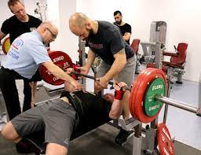
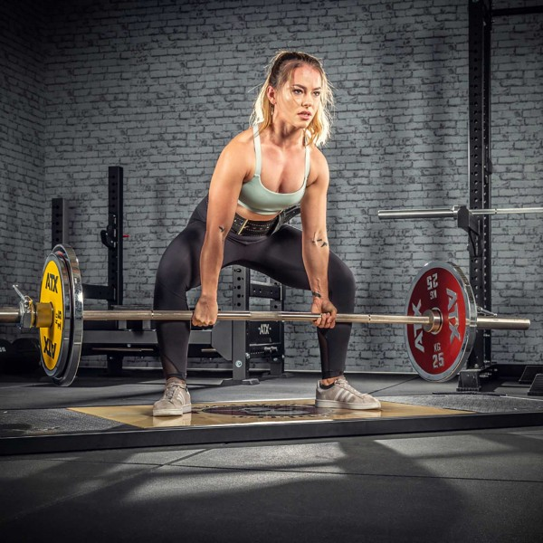

Powerlifting is a strength and conditioning sport that focuses on three main lifts: squat, bench press, and deadlift. It involves lifting weights to the maximum load possible, primarily using these fundamental lifts. Powerlifters often develop a mystical sense of training, as they push their bodies to the limits of physical capability. This sport is demanding and mentally challenging, requiring dedication and practice.
The sport has a simple structure, revolving around three main lifts: the low-bar back squat, bench press, and deadlift. However, the simplicity of the exercises belies the complexity of the techniques and mental fortitude required. Powerlifters learn intricate details of bracing, rooting, breathing, foot position, bar position, eye gaze, and head position to optimize their performance. This journey of strength development is both rewarding and transformative, as it teaches individuals about their bodies and themselves.
Powerlifting has a reputation for being a brutish sport, but it is much more than just lifting heavy objects. It is a sport that requires finesse and mental fortitude, as lifters must master various techniques and strategies to achieve their goals. By embracing the challenges and pushing their limits, powerlifters develop a deep understanding of their bodies and a strong sense of accomplishment.
5 Reasons You Should Become a Powerlifter
1. Strength Translates to Everything: According to Collins, strength is an invaluable investment in life. Athletes rarely attribute their losses to being too strong, and everyday activities become more efficient when you're physically strong. Whether it's excelling in sports or simplifying mundane tasks like carrying groceries, the benefits of strength permeate every aspect of life.
2. You'll Become Mentally Tougher: Powerlifting is not just a physical endeavor; it's a mental battle that demands unwavering psychological composure. Training often involves pushing to failure and then rebounding on the platform. The discipline, sacrifice, and ability to power through seemingly impossible weights contribute to mental toughness, shaping your resilience in the face of challenges.
3. It's Safe: Contrary to common misconceptions, powerlifting, under the guidance of a competent coach and proper preparation, boasts a lower injury rate compared to sports like soccer or basketball. Studies suggest that its safety profile is closer to sports such as tennis and volleyball, with the added benefit of decreasing the risk of osteoporosis.
 a certified coach and a powerlifter4. It Rewards Longevity: Unlike many sports where athletes peak in their 20s, powerlifters often reach their peak strength between 35 and 40 years old. This phenomenon of "old-man strength," coupled with a low risk of injuries and psychological veteran status, makes powerlifting an accessible and sustainable pursuit even for those who may not have started in their teens.
5. What You Should Know: While powerlifting offers numerous benefits, progression becomes progressively more challenging, demanding increased effort and dedication over time. Just like any worthwhile endeavor, achieving mastery in powerlifting requires patience and focus. As the saying goes, "The road to 90% is relatively easy, but the road from 90 to 100 is hard as hell." Additionally, be prepared for friends seeking your assistance, especially when it involves moving heavy items out of their apartments.
5 Ways to Avoid the Most Common Rookie Mistakes
1. Work Your Way Up: According to Collins, diving into powerlifting with excessive weight can lead to early failures, often deterring beginners. Ego management is crucial; leaving it at the door is essential. Before lifting a barbell, educate yourself on proper form and basic methodologies, laying the foundation for a successful and sustainable novice program.
 Beginner powerlifter starting with low weight2. Stay Disciplined: For effective powerlifting, singular focus is key—don't dilute efforts by engaging in unrelated activities like basketball or marathon running. Echoing the dedication seen in Ironman or Mr. Olympia training plans, powerlifters thrive when their attention is wholly committed to their specialized training. Alternatively, incorporating the "big three" exercises into an existing routine might be a smarter approach for those unwilling to fully commit to powerlifting.
3. Distinguish Strain from Pain: Gutting through a demanding deadlift workout can be draining, but Collins warns against glorifying pain as strength. Instead, recognize pain as a warning sign and avoid overexertion for the sake of social media validation. Progress with caution, ensuring a balance between pushing boundaries and respecting the body's limits.
4. Do Reps the Right Way: Proper form is paramount in powerlifting. Initiating with a full range of motion is emphasized, discouraging the common gym phenomenon of half-repping weights. Starting with correct technique and gradually increasing weights is crucial; in the realm of powerlifting, a half-rep is effectively a no-rep.
5. Work with a Knowledgeable Trainer: Drawing an analogy between sports, Collins highlights the importance of seeking guidance from a USA Powerlifting-certified coach as a novice powerlifter. A knowledgeable trainer can provide a structured training plan and introduce you to the intricacies of the discipline, ensuring a solid foundation for a successful and fulfilling powerlifting journey.